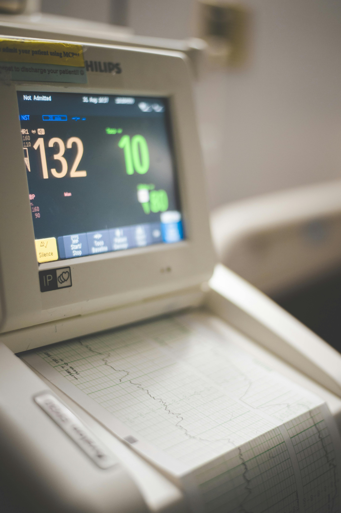

Cardiology and cardiac sciences are highly specialised fields that are dedicated to diagnosing, treating heart condtions that affect the circulatory system.At Naosu Healthcare Plus, cardiac procedures are performed by highly skilled heart specialists. Using detailed medical evaluation, modern technology and evidence-based treatments, Naosu aims to restore heart function, support long-term health and relieve patients from their pain! Our cardiology departments at Naosu hospitals across the UAE in Abu Dhabi, Dubai, Ajman, Sharjah and Ras Al Khaimah combine advanced medical expertise with a compassionate empathy to help patients live a healthier and stronger life.